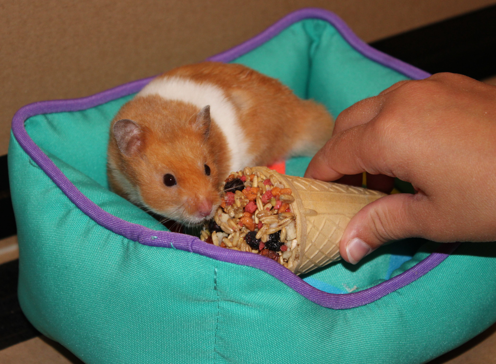

20-Sep-2017 | Milku
Let's celebrate Punch Day!
Today is Punch Day. So it's time to brew up a drink with five ingredients...and enjoy! Why five ingredients, I hear you ask. Well, the name comes from the Hindustani word 'panch', meaning five. So a traditional punch recipe will have five key ingredients: alcohol (usually spirits), lemon (or other fruits), sugar, water, and tea (or other spices, e.g. cinnamon).
I'm thinking I might need a extra shot of something in my punch tonight. Everton are in action once again. I'd almost forgotten they were still in the EFL Cup. I hope they still have being in the EFL up final as a goal this time tomorrow.
And if you don't want to drink all your punch, you could store in in a thermos flask in honour of today's scientist of the day. James Dewar was born on the 20th September 1842. One of his achievements was the design of an insulating double-walled flask with a vacuum between two silvered layers of steel or glass...
Let me ask, did you think of the drink when I mentioned that it was Punch Day? Are you sure you didn't think it was going to be an opportunity to hit someone? Or enjoy some traditional seaside entertainment?